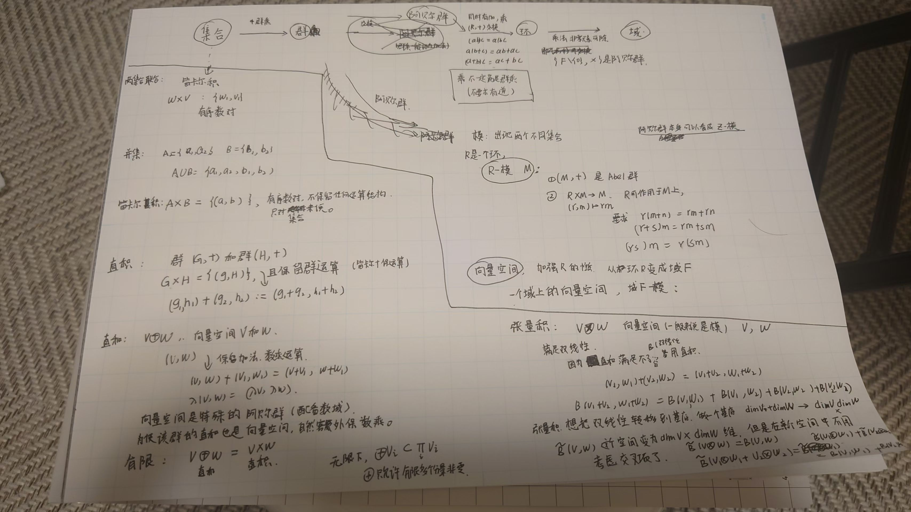

直积 / 直和 / 张量积 辨析#
简述：在数学与物理文献中，“直积”（Direct Product）、“直和”（Direct Sum）与“张量积”（Tensor Product）常被混用。最可靠的区分方法是看它们对维度的处理：是“相加”还是“相乘”。
来源链接：
https://www.changhai.org/forum/collection_article_load.php?aid=1186358149
直积有时候称为“完全直积”，以区别于“离散直积”（就是直和）。
另外还有个叫做笛卡尔积的，这是对集合的操作。 集合上是不是线性空间，有没有算符都无所谓。
手写梳理图#

这张图的主线是：先区分集合上的笛卡尔积与代数结构上的直积，再从群、环、模走到向量空间；有了线性结构以后，直和与张量积才成为两个不同的问题。
本文固定使用下面的记号：
- \(A\times B\)：集合的笛卡尔积；若 \(A,B\) 带有代数结构，则运算按分量定义，称为直积。
- \(V\oplus W\)：向量空间或模的直和。
- \(V\otimes W\)：向量空间或模的张量积。
“direct product” 在不同物理教材中偶尔被用来指 tensor product，因此最终应以符号、定义和运算为准，而不能只看中文名称。
从集合到向量空间#
集合：先有元素，再谈结构#
设 \(A,B\) 是集合。它们的笛卡尔积是
这里的元素只是有序对。仅凭这个定义，\(A\times B\) 上没有加法、数乘或乘法。
笛卡尔积与并集不是一回事：\(A\cup B\) 收集“来自 \(A\) 或 \(B\) 的元素”，而 \(A\times B\) 收集“一个 \(A\) 元素和一个 \(B\) 元素组成的有序对”。如果还要保留元素来自哪一侧的信息，应使用不交并 \(A\sqcup B\)。
群：在笛卡尔积上按分量运算#
设 \((G,\cdot)\) 与 \((H,\cdot)\) 是群。它们的直积群以 \(G\times H\) 为底层集合，乘法定义为
单位元是 \((e_G,e_H)\)，逆元是 \((g,h)^{-1}=(g^{-1},h^{-1})\)。因此“群的直积”并不是一种新的元素组合方式，而是给笛卡尔积配上逐分量群运算。
环、模与向量空间#
环 \(R\) 有加法和乘法；其中 \((R,+)\) 是 Abel 群，乘法满足结合律，并对加法满足分配律。乘法群通常只存在于可逆元集合 \(R^\times\) 上，所以“环的乘法”本身不一定构成群。
一个左 \(R\)-模 \(M\) 包含两部分结构：
- \((M,+)\) 是 Abel 群；
- 有标量作用 \(R\times M\to M\)，\((r,m)\mapsto rm\)，满足
若 \(R\) 有单位元，通常还要求 \(1_Rm=m\)。例如，每个 Abel 群都自然成为一个 \(\mathbb Z\)-模。
当标量环进一步是域 \(\mathbb F\) 时，\(\mathbb F\)-模就是 \(\mathbb F\) 上的向量空间。于是这条结构链可以概括为
直和与张量积都可以对模定义。下文先在同一域 \(\mathbb F\) 上的向量空间中讨论，这样核心结构最清楚。
直和：把线性空间并列起来#
外直和#
对两个向量空间 \(V,W\)，定义
并逐分量定义运算：
对有限个向量空间，外直和与直积具有相同的底层集合和逐分量运算，因此 \(V\oplus W\) 与 \(V\times W\) 是典范同构的。写 \(\oplus\) 是为了强调这里关心的是线性分解，而不只是有序对。
通过典范嵌入
每个元素都有唯一分解
若 \(V,W\) 有限维，则
内直和#
若 \(U,W\) 是同一个向量空间 \(X\) 的子空间，并且
则写作 \(X=U\oplus W\)。这两个条件等价于：每个 \(x\in X\) 都能唯一写成
外直和构造一个新空间；内直和描述一个已有空间的唯一分解。两者通过 \((u,w)\mapsto u+w\) 自然联系起来。
无限情形：直和与直积不再相同#
对一族向量空间 \(\{V_i\}_{i\in I}\)，直积允许任意分量非零：
直和只允许有限个分量非零：
因此
且当指标集 \(I\) 有限时二者才相等。例如，\(\prod_{n=1}^{\infty}\mathbb F\) 包含所有无限序列，而 \(\bigoplus_{n=1}^{\infty}\mathbb F\) 只包含最终为零的序列。
直和并不等于“只能二选一”#
把直和记成 “OR” 是有用的物理直觉：它表示不同扇区、通道或子空间的并列。不过一般元素 \((v,w)\) 可以同时有两个非零分量；直和本身并没有要求只能选择其中一个。量子理论中的叠加态也可以跨越多个直和扇区，除非另有超选择规则。
若算符 \(A:V\to V\) 与 \(B:W\to W\) 分别作用于两个扇区，则
其矩阵是块对角形式：
张量积：把双线性问题变成线性问题#
为什么直和不够#
设 \(B:V\times W\to X\) 对两个变量分别线性，即
这叫作双线性映射。它通常不是直积向量空间 \(V\times W\) 上的线性映射：因为 \(a(v,w)=(av,aw)\)，线性会要求
而双线性给出的却是
所以，有序对及其逐分量线性结构不能直接代表双线性关系。张量积正是为了解决这个问题。
泛性质：张量积的核心定义#
张量积 \(V\otimes W\) 是一个向量空间，并带有典范双线性映射
满足以下泛性质：对任意向量空间 \(X\) 和任意双线性映射 \(B:V\times W\to X\)，都存在唯一的线性映射
使得
也就是说，每个双线性映射都唯一地经过 \(V\otimes W\) 分解：
这就是“把双线性映射线性化”的准确含义。
从有序对构造张量积#
先取以 \(V\times W\) 中所有有序对为基的自由向量空间 \(\mathbb F^{(V\times W)}\)。这里的 \([v,w]\) 只是一个形式符号。再对下列关系生成的子空间取商：
在商空间中，\([v,w]\) 的等价类记为 \(v\otimes w\)。于是
并且
要注意，\(V\otimes W\) 不是只由形如 \(v\otimes w\) 的纯张量组成；一般元素是有限和
而且这个和通常不能压缩成一个纯张量。
基与维数#
若 \(\{e_i\}_{i=1}^{m}\) 是 \(V\) 的基，\(\{f_j\}_{j=1}^{n}\) 是 \(W\) 的基，则
是 \(V\otimes W\) 的基。因此在有限维情形
一个张量可以唯一写成
“维数相乘”是识别张量积的好办法，但它是定义的结果；张量积真正的定义是上面的泛性质。
用同一个例子比较#
令 \(V=\mathbb F^2\)、\(W=\mathbb F^3\)。
直和为
一个元素是 \((v_1,v_2,w_1,w_2,w_3)\)，它保留了“\(V\) 分量”和“\(W\) 分量”两个并列区块。
张量积为
其六个基方向是 \(e_i\otimes f_j\)。一般元素的系数可以排成一个 \(2\times3\) 矩阵 \((T^{ij})\)；这六个坐标表示每个 \(V\) 方向与每个 \(W\) 方向的两两组合。
| 比较 | 直和 \(V\oplus W\) | 张量积 \(V\otimes W\) |
|---|---|---|
| 目的 | 并列空间或分解扇区 | 表示双线性耦合或复合系统 |
| 典型元素 | \((v,w)\) | \(\sum_k v_k\otimes w_k\) |
| 基的组织 | 两组基的并集（经嵌入） | 两组基的所有配对 |
| 有限维维数 | \(\dim V+\dim W\) | \(\dim V\,\dim W\) |
| 算符形式 | \(A\oplus B\)，块对角 | \(A\otimes B\)，Kronecker 结构 |
| 物理直觉 | 并列扇区、通道 | 同时存在的子系统、耦合 |
物理中的典型例子#
直和：粒子数扇区与不变子空间#
Fock 空间按粒子数分解为
若某个哈密顿量保持两个子空间不变，例如偶宇称与奇宇称子空间，则
在几何中，乘积流形的切空间也表现为直和：
所以 \(\dim(M\times N)=\dim M+\dim N\)。
张量积：复合量子系统#
若系统 \(A,B\) 的态空间分别为 \(\mathcal H_A,\mathcal H_B\)，复合系统的态空间是
纯张量 \(|\psi\rangle_A\otimes|\phi\rangle_B\) 描述乘积态，而一般态
可能无法写成单个纯张量，这正是纠缠出现的地方。只作用于子系统 \(A\) 的算符写成
群的直积与表示空间的张量积是两层结构#
若 \(G,H\) 是群，\(\rho:G\to\mathrm{GL}(V)\) 与 \(\sigma:H\to\mathrm{GL}(W)\) 是表示，则可在 \(V\otimes W\) 上定义 \(G\times H\) 的表示：
这里 \(G\times H\) 是群的直积，\(V\otimes W\) 是表示空间的张量积，右侧矩阵可用 Kronecker 积实现。三个概念同时出现，但不能因此把群的直积与张量积视为同一种运算。
最后判断方法#
遇到含混的“直积”一词时，可以依次问：
- 只是把两个集合的元素组成有序对吗？若是，就是笛卡尔积 \(A\times B\)。
- 是让代数运算逐分量进行吗？若是，就是群、环或向量空间的直积；对有限个向量空间，它与直和典范同构。
- 是把空间分成独立扇区，并要求元素具有唯一的分量分解吗？若是，使用直和 \(\oplus\)。
- 是要表达双线性关系、所有基方向的两两组合或复合量子系统吗？若是，使用张量积 \(\otimes\)。
一句话概括：直和组织“并列的分量”，张量积组织“成对的方向”；有限维时前者维数相加，后者维数相乘。
参考链接：
- https://en.wikipedia.org/wiki/Tensor_product "Tensor product"
- https://cns.gatech.edu/~predrag/courses/PHYS-6124-12/StGoChap10.pdf "Vectors and Tensors (chapter)"
- https://quantum-abc.de/Tensor_products.pdf "Tensor products (intro)"
Created: 2025-11-06